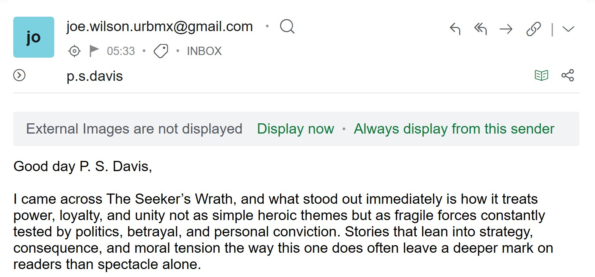
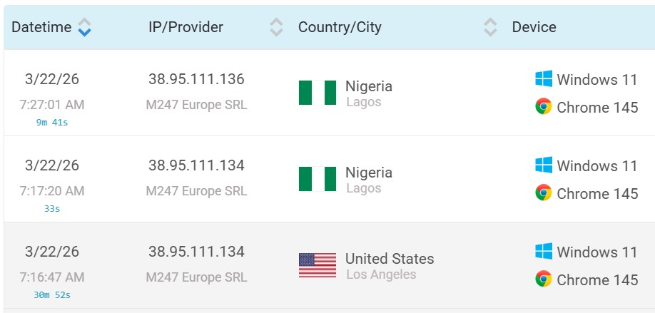
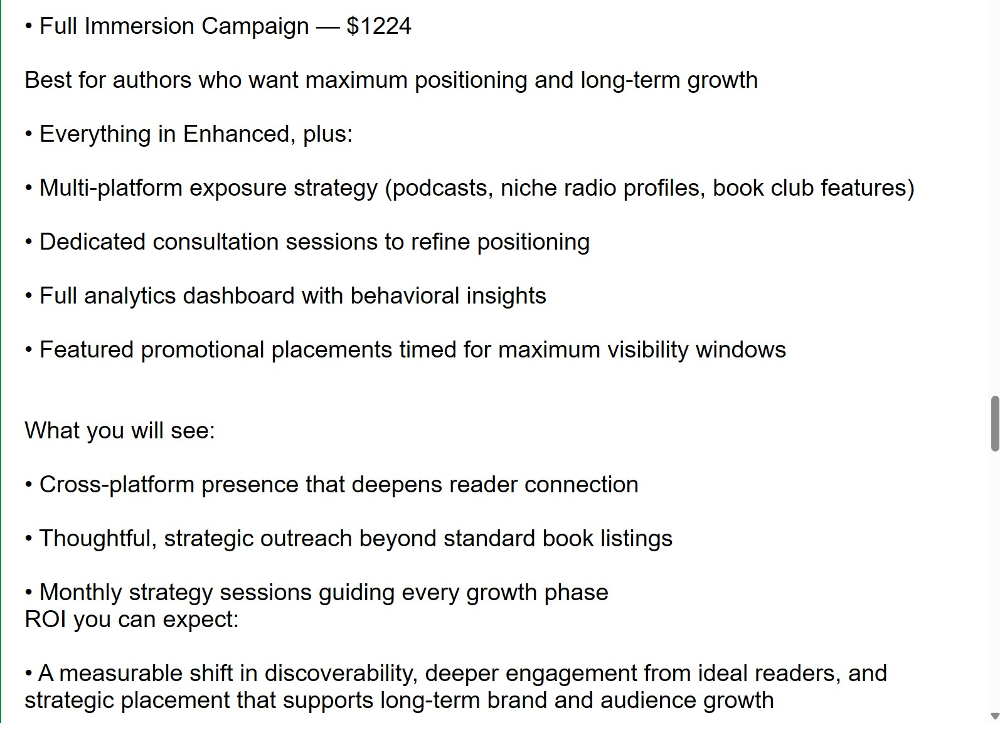
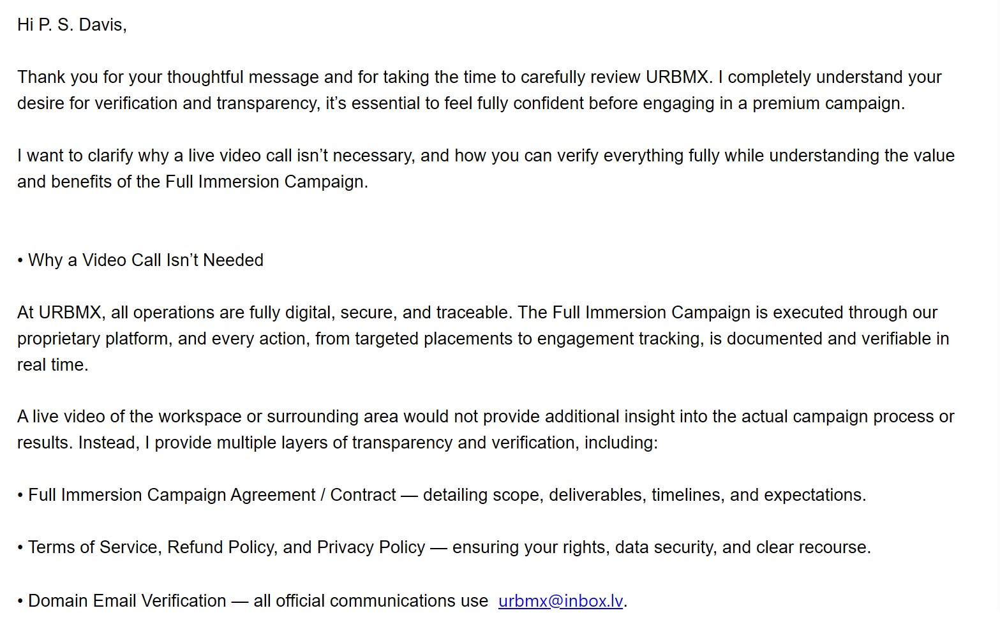
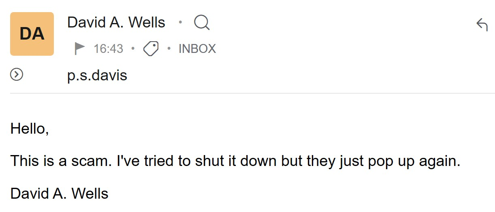
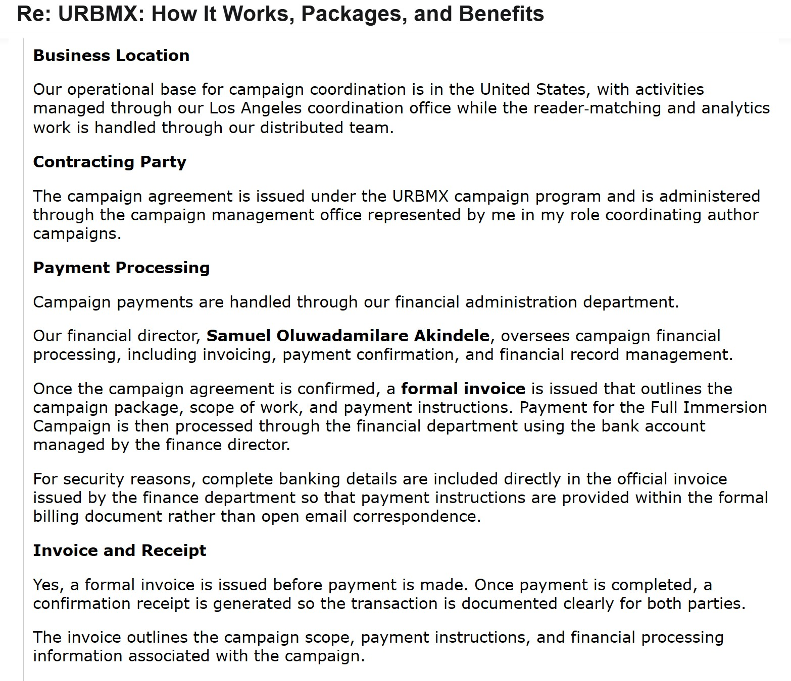

I Let a Book Marketing Scammer Think He Had a Sale
Today, I received one of those emails that indie authors learn to recognise almost by the subject line alone. It arrived dressed in flattery, polished language, and just enough specificity to seem plausible if you were tired, hopeful, or both. The sender introduced himself as Joe Wilson from URBMX, short for Universal Reader-Book Matching Exchange, and he claimed to have come across The Seeker’s Wrath. What impressed him, he said, was not merely the book itself, but its strategic depth, its moral tension, its political layering, and its sense of consequence. It was the usual performance. Perhaps AI really did enjoy my book. That, in some ways, is what makes this even more dangerous.

Screenshot from the exchange.
Writers are soft targets for this kind of approach. We spend years making something out of nothing, then throw it into a market that is crowded, indifferent, and often brutal. When someone appears in your inbox claiming not only to understand your work but to know exactly how to place it before the right readers, the pitch is designed to strike where the armour is thinnest. It is not aimed at vanity alone. It is aimed at hunger, and at the very ordinary human wish to be read by the people who might actually care. That is what can make these approaches effective. They do not always sound ridiculous. Sometimes they sound measured, thoughtful, and just convincing enough to make you pause.
I did not pause for long. I have seen enough of these things to know that the first rule is simple: never let the praise do the thinking for you. I have ways to get information many people never see, including IP data and routing clues. That was where the first rot showed through. The signals attached to this exchange were strange. The Android device appeared to ping in Lagos. The Windows 11 machine also appeared to ping in Lagos, while at the same time showing Los Angeles through what looked like a VPN. Had the machine truly been in Los Angeles, the timing would have been absurd for ordinary business contact, around two in the morning on a Sunday. Not impossible, of course. People do work odd hours. Scammers do too. The point was not that this proved anything on its own. The point was that the story was already slipping before it had even had time to settle. When I raised the issue, Joe replied directly: ‘I am not based in Nigeria. I’m reaching out genuinely from Los Angeles.’ That was one of the first moments when the tone of the whole thing changed for me. Honest businesses do not usually need to begin by arguing with metadata.

The IP address and location of the person sending me the emails.
At that point I had a choice. I could ignore it, delete it, and move on with my life. That would have been the sensible thing. Instead, I decided to keep going. I wanted to see how these people operated when someone did not simply ask, ‘How much?’ and reach for a credit card, but began asking the sort of questions any adult should ask before sending serious money to strangers on the internet. So I played along. I told him I was interested. More than interested, in fact. I let him believe I might be prepared to pay for the top package if everything checked out properly. That was not theatre for its own sake. It was the only way to see how the machinery behaved under pressure.
Once he thought he had a live one, the full sales pitch came out. There were three packages. The first, called the Reader Alignment Package, cost $528. The second, the Enhanced Visibility Package, cost $864. The third, the one they clearly wanted me to want, was called the Full Immersion Campaign and cost $1224. That is not hobby money. That is not the sort of sum one shrugs off as a harmless experiment. For many writers, that is a serious financial decision. It is editing money, cover money, living-expenses money, food-on-the-table money. It deserves serious scrutiny.
What did those packages actually promise? On the surface, quite a lot. They claimed to begin with a close reading of The Seeker’s Wrath, followed by ‘precision reader matching’, then ‘visibility and discoverability optimisation’ across Amazon, Goodreads, BookBub-style communities, and related reader networks. They spoke of analytics, behavioural insights, engagement tracking, reader communities, podcasts, niche radio, book club features, strategic exposure, and measurable return on investment. The language was dense with the sort of polished abstraction that sounds impressive until you stop and ask what any of it means in practice.
Funny enough, the site that was given had entirely different investment tiers. Furthermore, the entire site was on a free server and appeared entirely generated by AI.
That was where I began tightening the screws. I asked what the legal name of the business was. I asked where it was registered, what the company registration number was, what country the business legally existed in, and what physical address belonged to it. I asked who, exactly, I would be contracting with. I asked what payment method would be used, what name would appear on the invoice, what name would appear as the payee, whether the money would go to a company or an individual, whether VAT or other taxes applied, and what jurisdiction would govern the contract if anything went wrong. I asked what specific deliverables existed inside the Full Immersion Campaign, how many placements, on which platforms, over what timeline, with what reporting frequency, and with what concrete actions taken on my behalf. These are not exotic questions. These are basic commercial questions. Any legitimate business taking four figures from an author should be able to answer them cleanly, quickly, and in writing.

The top tier package costs presented in the email.
What came back was revealing, not because it answered much, but because it did not. The replies kept circling the same foggy language about transparency, traceability, visibility, alignment, measurable results, and secure digital operations. When I asked for the legal identity of the business, I got reassurances. When I asked for the payment chain, I got process language. When I asked for a live video call and a look at the working environment, I was told that a video call was unnecessary because everything was digital, secure, and traceable. That answer is worth dwelling on for a moment, because it is one of the cleanest red flags in the whole exchange. A real business does not have to submit to every unusual request from a cautious customer. That is fair enough. Yet when someone is asking for over a thousand dollars, cannot clearly establish their legal identity, and refuses the simplest live verification on the grounds that the platform itself should be enough, then the problem is no longer caution. The problem is credibility.

By this point the pitch looked more like a costume than a business.
Then came the website. I was sent to the URBMX platform and told this would show me the concept, the process, the dashboard, and the proof. What I found was not a polished, established business presence with a clear domain, clear legal notices, and the sort of institutional competence one expects from a company handling payments and contracts. It was a site hosted on a lovable.app subdomain, exactly the sort of thing that can be put together quickly with an AI-assisted website builder.
The costs presented on the site didn't match the costs presented in the email.
The email setup was no better. The outreach began from Gmail. Later, when I pressed on verification, I was told that official communication used urbmx@inbox.lv. Again, let us be clear. There is nothing inherently unlawful about Gmail. There is nothing inherently unlawful about inbox.lv either. The issue here is not that such addresses exist. The issue is that a supposed premium marketing business taking four-figure payments was not operating through a clean branded domain that matched a clear legal entity and a professional website. Instead, the brand identity seemed to be stitched together from a Gmail account, a third-party inbox.lv address, and a no-code site on a subdomain. That is not what trust looks like. That is what improvisation looks like.
The claims about previous clients followed the same pattern. Joe named three authors: Mallory Pearson, Emily Childs, and David A. Wells. He claimed they had seen tangible results, improved visibility, stronger engagement, traction in niche reading groups, and better discoverability across Goodreads and Amazon. Yet when I asked for public case studies, concrete figures, permission to share results, or direct references, the answer softened into privacy language. He would perhaps ask one of them whether they might be willing to speak. Perhaps. Maybe. Later. That is a familiar trick. Put enough names on the table to imply legitimacy, then retreat into confidentiality the moment anyone asks for verifiable substance.
I reached out to David A. Wells, and as you can imagine, his response was less than receptive to Joe.

David's response was no surprise.
By this stage the tone of the exchange had become almost surreal. I was asking the plainest questions possible, and the answers kept returning in the same inflated dialect of digital marketing. Everything was ‘measurable’. Everything was ‘strategic’. Everything was ‘aligned’. Everything was ‘transparent’, except the things that actually mattered. There is a particular kind of dishonesty that does not arrive through open contradiction, but through endless substitution. You ask, ‘Who is the legal entity?’ and you are given a paragraph about process. You ask, ‘Who gets paid?’ and you are handed a PDF. You ask, ‘What country are you registered in?’ and you are invited to admire the dashboard. In the hands of a nervous or excited author, that sort of language can produce the illusion of solidity. It feels professional because it is never still long enough to be pinned down.

The details kept dissolving under basic questions.
The PDF itself did not rescue anything. It repeated the packages, repeated the promises, repeated the vague deliverables, and repeated the promise of a payment process overview, yet the essential commercial facts I had asked for still did not arrive in the direct, unmistakable form they should have. Even after I explicitly asked for the full legal name of the business, the registration number, the tax identification details, the registered address, the contracting party, the payee details, the payment processor, the name that would appear at checkout, the invoice identity, the receipt identity, and the jurisdiction for disputes, what came back was yet another assurance that the documentation package contained the operational structure and would give me ‘complete clarity’. It did not. If I have to interrogate a company three times to discover who I would be paying, then the answer is already no.
What struck me most was how dangerous this sort of thing can be precisely because it is not the old cartoon version of a scam. This was not a prince with a suitcase of cash. This was not broken English and a demand for urgency. This was softer than that, more polished than that, and in some ways far more effective because it understood the emotional landscape of independent authors. It knew how to flatter the work. It knew how to sound measured. It knew how to package itself in the rhetoric of discoverability and audience targeting. Most importantly, it knew that many writers are desperate not for riches, but for the faintest sense that someone out there might know how to bridge the gap between a finished book and a real readership. That is where the danger lies. Not in obvious absurdity, but in manufactured plausibility.
It is also dangerous because of the money involved. If this had been a fifty-dollar punt, it would still have been dishonest, but it would not have mattered in quite the same way. This was over twelve hundred dollars for the premium package, or $2000 if you paid via the site, sold with the language of meaningful growth, measurable ROI, and long-term reader connection. That is enough money to hurt. Enough money to sting if it vanishes. Enough money that some writers, especially newer ones, might talk themselves into the risk because the whole business of being read can already feel like trying to light a fire in the rain.
I am not writing this because I think I have uncovered some grand criminal network with lairs, corkboards, and villains stroking white cats. The truth is usually smaller and grubby. What I encountered looked very much like a person or a small group using whatever tools were available: a Gmail account, a free or cheap site build, a throw-together brand, some AI-polished copy, some vague references to previous clients, and just enough sales confidence to see who bites. That is all a scam often is. Not genius. Not sophistication. Just repetition, nerve, and a good read of the target’s weak points.
And I did let him think he had a sale. That was deliberate. I told him I was interested in the Full Immersion Campaign. I said I was willing to pay for the top-tier option if everything checked out. I wanted to see whether the promise of money would finally force the real details out into the open. It did not. The closer I moved toward the supposed point of purchase, the more obvious the evasions became. That, for me, was the final proof that this was never about a legitimate business relationship. A real company wants the sale, yes, but it also wants the paper trail to make sense. It wants the invoice to be clear. It wants the contract to hold up. It wants the customer to know who is being paid and why. Here, the closer I got, the less solid everything became.
That is the lesson I would offer to any author reading this. Do not judge these approaches by how flattering they sound or how clean the website looks at first glance. Judge them by what happens when you ask boring questions. Ask for the legal name. Ask for the registration number. Ask for the address. Ask who gets paid. Ask what name appears on the invoice. Ask what payment processor is used. Ask what country governs the contract. Ask how results are measured. Ask what exactly is done on your behalf. Ask for specifics. Then watch the quality of the answers. That is where the costume usually starts to tear.
In the end, what I saw was not a serious marketing firm offering serious services. I saw a performance of legitimacy. I saw the language of business standing in for the substance of business. I saw a pitch designed for vulnerable people in a difficult industry, and I saw how easily that pitch might have worked on someone who was newer, more trusting, or simply more tired. That is why I am writing about it. Not because this one exchange matters on its own, but because the pattern matters, and because authors deserve better than being treated as marks in a carnival game built out of jargon, borrowed credibility, and disappearing facts.
If you are a writer and something like this lands in your inbox, do not be embarrassed that it nearly sounded convincing. That is the point. These things are built to sound convincing. Just do yourself a favour before you part with money. Slow down. Take a breath. Ask the questions that make honest people answer plainly and dishonest people wriggle. I did, and what came back told me everything I needed to know.
Wells Fargo have been informed of the account involved. If anything suspicious does occur from here, then this may become a police matter, and potentially a federal one.